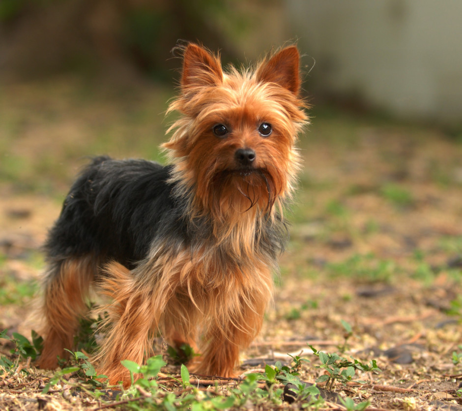

The Best Types of Dogs
Dogs are the best.
Some really cool dog breeds include;
- French bulldog
- Whippet
- Corgi
- Husky
- German Sheppard
- Kelpie Cross
But that's not all!!
Here are some picture of really small dogs.
Chihuahua

Yorkshire Terrier

My Favourite Dogs
But if I had to choose my top 3 favourite dog breeds, they would be...
- Border Collie

- Pug

- Miniature Schnauzer

Click here for Next Page
Click for Brocku
Click here to get back to the top!